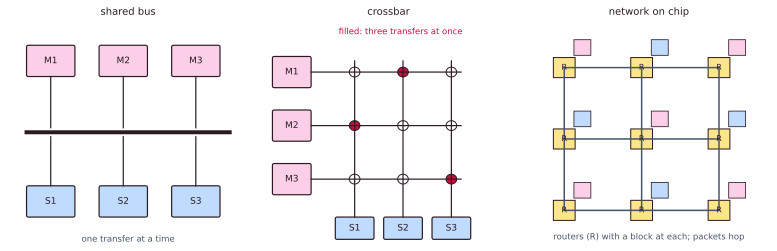
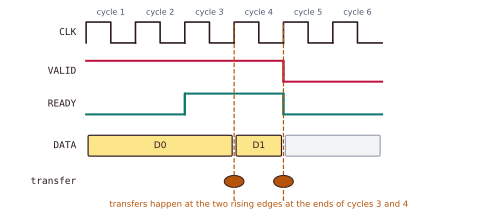
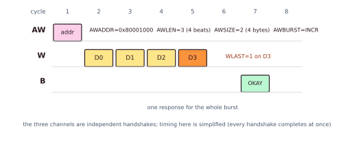
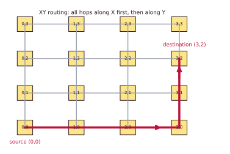

Chapter 6: On-Chip Interconnect¶
A modern system-on-chip is a city of dozens of blocks: CPU clusters, DMA engines, memory controllers, accelerators and a swarm of peripherals, all of which must reach memory and each other. The interconnect is the road network that lets them share access without gridlock. This chapter builds up from the golden rule of on-chip protocols, the VALID/READY handshake, through the AMBA family (APB, AHB and AXI), TileLink, Wishbone and CHI, to full networks-on-chip, and ends with two small models that show where the performance of a bus really comes from.
You need the idea of a memory-mapped address from Chapters 1 and 4 and the notion of coherence from Chapter 5 for the remarks on TileLink and CHI.
6.1 Why a chip needs roads¶
A single core wired directly to a single memory needs no interconnect. A real chip has many blocks that start transactions and many that answer them, and wiring each directly to every other would need about \(n^2/2\) connections for \(n\) blocks, which would cover the die. Instead the blocks attach to a shared fabric that routes, arbitrates and decodes on their behalf. A city does not build a private road from every house to every shop; it builds a road network with junctions and traffic lights.
Who asks, and who answers¶
A manager starts transactions: "read address A", "write this to B". CPU cores, GPUs and DMA engines (hardware that copies blocks of data by itself) are managers. Older documents say master. A subordinate responds: a memory, a block of control registers, a FIFO, a serial port. Older documents say slave. One block can be both: a DMA engine moves data as a manager, but its settings are written by the CPU, so to the CPU it is a subordinate.
Every subordinate owns an address range¶
0x0000_0000 - 0x0000_FFFF boot ROM
0x1000_0000 - 0x1000_0FFF interrupt controller
0x1001_0000 - 0x1001_0FFF UART0
0x1001_1000 - 0x1001_1FFF SPI0
0x2000_0000 - 0x2FFF_FFFF PCIe / accelerator
0x8000_0000 - 0xFFFF_FFFF DRAM (via the memory controller)
This table is the chip's memory map. A store to 0x1001_0000 does not touch RAM at all: it lands in a register of the serial port, UART0. (The underscore only groups hex digits for reading, like the commas in 1,000,000.)
The interconnect's three jobs¶
- Address decoding. Look at each request's address and send it to the one subordinate that owns it: in hardware, just a comparator for each address range.
- Arbitration. When two managers want the same subordinate in the same cycle, pick a winner (in turn, by priority, or weighted by quality of service) and make the other wait. Fairness and the avoidance of starvation live here.
- Bridging. Join parts that differ: a 32-bit slow device hanging off a 128-bit fast backbone needs data-width conversion, a clock-domain crossing, and often protocol translation.
6.2 Bus, crossbar, network¶
There are three ways to lay the roads, from cheap and simple to big and scalable.
- A shared bus is one set of wires that everyone time-shares. It is cheap and simple, but only one transfer can occur at a time, and contention rises fast. (Classic AHB and shared Wishbone.)
- A crossbar is a full switch: any manager can reach any subordinate, and non-conflicting pairs proceed in parallel. It gives great bandwidth, but its area and wiring grow as managers × subordinates. Most AXI interconnects are full or partial crossbars.
- A network-on-chip (NoC) sends packets through routers, like a tiny internet on the die. It scales to hundreds of endpoints and is the standard choice for many-core CPUs and large SoCs.

| Shared bus | Crossbar | Network-on-chip | |
|---|---|---|---|
| Scales to | A few managers | About 16 × 16 | Hundreds of nodes |
| Wiring cost | Low | Grows as managers × subordinates | Grows about linearly |
| Delay | Low when quiet; bad when busy | Low and steady | A few cycles per hop, predictable |
| At once | 1 transfer | Many, if there is no clash | Many flows |
| Typical use | Slow peripherals | The main backbone of most chips | Many-core CPUs, GPUs |
Real chips mix them: a fast crossbar or network in the middle connects the CPU clusters, memory and high-bandwidth accelerators, and slow devices hang off a cheap bus behind a single bridge. Spend wires where the traffic is.
6.3 The VALID/READY handshake¶
Nearly every modern on-chip protocol is built on one tiny rule.
- The sender drives VALID: "there is something on the wires this cycle".
- The receiver drives READY: "I can take it this cycle".
- A transfer happens on a rising clock edge if and only if both are high on that edge.
- Once VALID is raised, the sender must hold it, and keep the data steady, until the transfer happens.
It is like handing over a parcel. The courier holds it out (VALID); you hold out your hands (READY). It changes hands only when both are out, and the courier must not snatch it back while waiting.

Example 6.1: counting transfers
VALID is high in cycles 1 to 4; READY is high only in cycles 3 and 4. Which cycles transfer data?
In cycles 1 and 2 VALID is high but READY is low: no transfer, and the sender holds D0 steady. In cycle 3 both are high: D0 is transferred at the edge that ends cycle 3. In cycle 4 both are still high: D1 is transferred at the edge that ends cycle 4. After that VALID falls. There are two transfers.
Two gifts come from this one rule.
Back-pressure. A busy receiver simply keeps READY low. The sender waits with its data; nothing is lost and nothing overflows. Flow control comes free, with no explicit credit accounting on the wire. Symmetrically, a sender with nothing to send holds VALID low and the receiver idles.
Easy composition. Because each handshake is self-contained and stateless per beat, a register (a skid buffer) can be dropped into any channel to break a long timing path, and channels can be forked and joined in a crossbar, and everything still works, just a cycle later. This is latency-insensitive design: pipeline stages can be inserted freely without breaking function.
6.4 The AMBA family: APB, AHB and AXI¶
Arm's AMBA (Advanced Microcontroller Bus Architecture) standards are free to use and are the most widely used on-chip protocols in the world, far beyond Arm cores. They are three protocols for three tiers of the SoC.
- APB, the Advanced Peripheral Bus. Simple, low-power and unpipelined: one access at a time in two phases (setup, then access), no bursts, no outstanding transactions. It suits slow registers: timers, GPIO and the configuration of serial ports.
- AHB, the Advanced High-performance Bus. Pipelined: the address phase of the next transfer overlaps the data phase of the current one. One shared bus with a central arbiter; supports bursts. It was the classic higher-bandwidth backbone before AXI.
- AXI, the Advanced eXtensible Interface. Today's high-performance choice: five independent channels, separate reads and writes, bursts, and many outstanding, out-of-order transactions through IDs.
AXI comes in three sizes. AXI4 is the full burst protocol (up to 256 beats per burst). AXI4-Lite is a stripped-down subset with single beats, no bursts and no IDs, ideal for simple register interfaces on accelerators. AXI4-Stream drops addressing entirely: a pure point-to-point flow of data (TVALID, TREADY, TDATA, TLAST) for video, audio and DSP pipelines.
The five AXI channels¶
AXI's power comes from splitting reads and writes into fully independent channels, each its own VALID/READY handshake. Writes use three channels, reads two, and they run concurrently and out of lock-step.
| Channel | Short | Driven by | Carries |
|---|---|---|---|
| Write address | AW | manager | AWADDR, AWID, AWLEN (burst length), AWSIZE, AWBURST |
| Write data | W | manager | WDATA, WSTRB (byte-lane enables), WLAST |
| Write response | B | subordinate | BRESP (OKAY, EXOKAY, SLVERR, DECERR), BID |
| Read address | AR | manager | ARADDR, ARID, ARLEN, ARSIZE, ARBURST |
| Read data | R | subordinate | RDATA, RRESP, RID, RLAST |
Bursts: one address, many beats¶
In a burst, one address beat describes a whole run of data beats. AWLEN (or ARLEN) gives the number of beats minus one, AWSIZE gives the bytes per beat as a power of two, and AWBURST gives the mode.
| Mode | Address on each beat | Used for |
|---|---|---|
| INCR | goes up | Copying a contiguous block of memory |
| WRAP | goes up, then wraps inside an aligned block | Cache-line fills, "the word you are waiting for first" (critical word first) |
| FIXED | stays the same | Pouring data into one FIFO register |
AXI write burst: 4 beats of 4 bytes to 0x8000_1000
AW: AWADDR=0x80001000 AWLEN=3 (4 beats) AWSIZE=2 (4 bytes) AWBURST=INCR AWID=5
W : WDATA=D0 WSTRB=1111 WLAST=0
W : WDATA=D1 WSTRB=1111 WLAST=0
W : WDATA=D2 WSTRB=1111 WLAST=0
W : WDATA=D3 WSTRB=1111 WLAST=1 <- the last beat
B : BRESP=OKAY BID=5 <- one reply for the whole burst

Outstanding transactions and IDs¶
A manager may send a new address before earlier requests have been answered. Requests still waiting for their answer are outstanding transactions. Each carries an ID (AxID). Answers with different IDs may come back in any order, so a fast on-chip memory can overtake a slow DRAM read; answers with the same ID stay in order. The fabric matches each R or B beat to its request by ID.
6.5 Two models of performance¶
Interconnect performance rests on two levers: amortising the per-transaction overhead with bursts, and hiding latency with outstanding transactions.
Example 6.2: why bursts pay
Suppose issuing an address costs a fixed 5 cycles of overhead and each 8-byte beat costs 1 cycle. Move 64 bytes.
- As eight single beats: \(8 \times (5 + 1) = 48\) cycles, a rate of \(64/48 = 1.33\) bytes per cycle.
- As one 8-beat burst: \(5 + 8 = 13\) cycles, a rate of \(64/13 = 4.9\) bytes per cycle.
The same data moves at \(48/13 \approx 3.7\) times the throughput, because the address overhead is paid once. This is exactly why cache-line fills and DMA copies use long INCR or WRAP bursts.
Example 6.3: hiding a 20-cycle delay
A memory takes 20 cycles to answer but accepts a new request every cycle. One request at a time, you get one answer per 20 cycles. Keep 20 requests in flight (pipeline the AR channel, with distinct IDs) and, once the pipe is full, you get one answer every cycle: 20 times the throughput. Little's law says it in general:
With 4 requests in flight the throughput is \(4/20 = 0.2\) answers per cycle; to reach 1 per cycle you need \(1 \times 20 = 20\) in flight.
AXI is not faster than APB because of its clock
Both can run at the same frequency. AXI wins through concurrency: separate read and write channels, bursts that amortise addressing, and many outstanding, reorderable transactions that hide memory latency. APB moves one register at a time with per-access overhead and no overlap. A "faster" bus that allows only one outstanding transaction can still be slower than a modest one that keeps 16 in flight.
6.6 TileLink, Wishbone and CHI¶
TileLink is an open interconnect standard from SiFive, native to the Rocket and BOOM cores and to the rocket-chip and Chipyard generators (Chapter 8). One protocol scales from a trivial register bus to full cache coherence, through three conformance levels.
| Level | Name | Capability | Channels used | Rough AXI analogue |
|---|---|---|---|---|
| TL-UL | Uncached lightweight | Single-beat reads and writes: simple memory-mapped registers | A, D | AXI4-Lite |
| TL-UH | Uncached heavyweight | Adds bursts, atomics and hints such as prefetch, but no caching | A, D | AXI4 (full) |
| TL-C | Cached (coherent) | Full cache coherence: permission acquire and release, probes | A, B, C, D, E | Arm's coherent buses |
The five channels A to E have a strict priority order that provably prevents deadlock.
| Channel | Direction | Purpose |
|---|---|---|
| A | manager to subordinate | Request: read (Get), write (Put), atomic, or acquire-permission |
| B | subordinate to manager | Probe: ask a caching manager to give up or downgrade a block (TL-C only) |
| C | manager to subordinate | Release or probe response: write back dirty data, acknowledge a probe (TL-C only) |
| D | subordinate to manager | Response or grant: read data, write acknowledgement, permission grant |
| E | manager to subordinate | Grant acknowledgement: the final handshake that closes a coherence transaction (TL-C only) |
Both TileLink and AXI use VALID/READY, support bursts and outstanding transactions. The key differences are that TileLink builds coherence into the protocol itself (TL-C) instead of needing a separate coherent variant, that it enforces the channel priority to prove deadlock freedom formally, and that it is open and RISC-V-native. AXI is more widespread in commercial IP and has the vast AMBA ecosystem behind it. Chipyard SoCs typically use TileLink inside and bridge to AXI at the memory-controller and PCIe edges.
Wishbone is the other end of the scale: a public-domain, deliberately minimal bus from OpenCores, common in open-source IP and in the LiteX ecosystem. Classic Wishbone is a simple synchronous handshake (STB, ACK and CYC) supporting single and (in its pipelined B4 form) burst cycles. Its charm is simplicity, at the cost of deep outstanding transactions, reordering and coherence.
CHI, Arm's Coherent Hub Interface, is the top of the AMBA stack, aimed at large, many-core, cache-coherent systems. Unlike AXI's channel-and-address model, CHI is packet-based with credit flow control, designed to scale across a coherent mesh, carrying snoops and coherence messages between many caches and home nodes. It is overkill for a microcontroller and essential for a 64-core server chip.
6.7 Inside a network-on-chip¶
Once there are too many endpoints for a crossbar, a packet-switched NoC takes over, and its vocabulary mirrors computer networking, shrunk onto silicon.
- Each block attaches to a router; routers connect to their neighbours by point-to-point links.
- A message is chopped into packets, and each packet into fixed-size flits (flow-control units): a head flit carries the routing information, body flits carry the payload and a tail flit closes the packet. Flits stream through the routers, often in wormhole fashion, so that one packet spans several routers at once.
- Topologies. A ring is cheap (two links per node) but its latency grows linearly with size. A mesh is a two-dimensional grid with good bisection bandwidth and simple routing, and is the many-core favourite. A torus is a mesh with wrap-around links, halving the worst-case hop count at the cost of longer wires.
- Routing picks the path. XY routing, which goes along X first and then along Y, is simple and cannot deadlock on a mesh. Adaptive routing dodges congestion but must avoid routing deadlock, for example with virtual channels.
- Flow control decides when a flit may advance. Credit-based schemes track the free buffer slots downstream. Virtual channels share one physical link between several queues, so that one blocked packet does not hold up all the others (head-of-line blocking).

6.8 Summary¶
- Managers start transactions, subordinates answer. The interconnect decodes addresses, arbitrates and bridges.
- Shared bus, crossbar and network-on-chip run from cheap and serial to parallel and scalable; big chips use all three.
- VALID/READY: a transfer happens only when both are high. Back-pressure and easy composition come free.
- AMBA: APB for slow registers, AHB the older backbone, AXI with five channels, bursts and outstanding, reorderable transactions.
- TileLink scales from registers to coherence for RISC-V; Wishbone is the simple open bus; CHI is the large coherent one.
- Performance comes from concurrency, not clock rate: bursts amortise addressing, and outstanding transactions hide latency (Little's law).
6.9 Exercises¶
Exercise 6.1. VALID is high in cycles 1 to 4 and READY is high only in cycles 3 and 4. How many transfers happen, and in which cycles?
Answer
Two: at the clock edges that end cycles 3 and 4. In cycles 1 and 2 the sender holds its data and waits.
Exercise 6.2. VALID is high in cycles 1 to 6, and READY is 0, 1, 0, 1, 1, 0 in cycles 1 to 6. In which cycles do transfers occur?
Answer
A transfer needs both high: cycles 2, 4 and 5, so three transfers. In cycles 1, 3 and 6 the sender holds its current data.
Exercise 6.3. "AXI is faster than APB because it runs at a higher clock." Is that true?
Answer
Not really. Both can run at the same clock. AXI wins through concurrency: separate read and write channels, bursts that pay the address cost once, and many requests in flight.
Exercise 6.4. Why must an AXI burst of 16 beats of 8 bytes be described by AWLEN = 15 and AWSIZE = 3?
Answer
AWLEN holds the number of beats minus one: \(16 - 1 = 15\). AWSIZE holds the base-2 logarithm of the bytes per beat: \(2^3 = 8\) bytes. The burst moves \(16 \times 8 = 128\) bytes from one address beat.
Exercise 6.5. Address overhead is 4 cycles and each beat costs 1 cycle. Compare the cycles needed to move 16 beats as 16 single transfers and as one burst, and the ratio of throughputs.
Answer
One at a time: \(16 \times (4 + 1) = 80\) cycles. One burst: \(4 + 16 = 20\) cycles. The burst has \(80/20 = 4\) times the throughput.
Exercise 6.6. A memory answers 24 cycles after a request and accepts a new request every cycle. A manager can have 6 requests outstanding. What is its throughput, and how many must be outstanding to reach one answer per cycle?
Answer
By Little's law, throughput \(= 6/24 = 0.25\) answers per cycle. To reach 1 per cycle it needs \(1 \times 24 = 24\) requests in flight.
Exercise 6.7. Using the memory map in Section 6.1, which subordinate receives a store to 0x1000_0800? To 0x1001_1008? To 0x8000_1000? What should the fabric do with an access to 0x1002_0000?
Answer
0x1000_0800 lies in 0x1000_0000 to 0x1000_0FFF: the interrupt controller. 0x1001_1008 lies in 0x1001_1000 to 0x1001_1FFF: SPI0. 0x8000_1000 lies in the DRAM range. 0x1002_0000 lies in no range, so no subordinate claims it; the fabric should answer with an error response (in AXI, a decode error, DECERR) rather than hang.
Exercise 6.8. In a 4 × 4 mesh with XY routing, list the routers a packet visits from router (1,3) to router (3,0), writing routers as (x,y).
Answer
Along X first: (1,3), (2,3), (3,3). Then along Y: (3,2), (3,1), (3,0). That is five hops between six routers.
Exercise 6.9. Give one reason a large SoC uses an APB bus for its UART and SPI controllers while using a crossbar or NoC for CPU, memory and accelerators.
Answer
Peripheral registers are accessed rarely and slowly, so the cheap, simple, low-power APB with its two-phase access suffices, and a single bridge connects it to the backbone. The CPU, memory and accelerators exchange large volumes of traffic that needs the parallelism of a crossbar or NoC, and spending wires and gates there is where the bandwidth is.